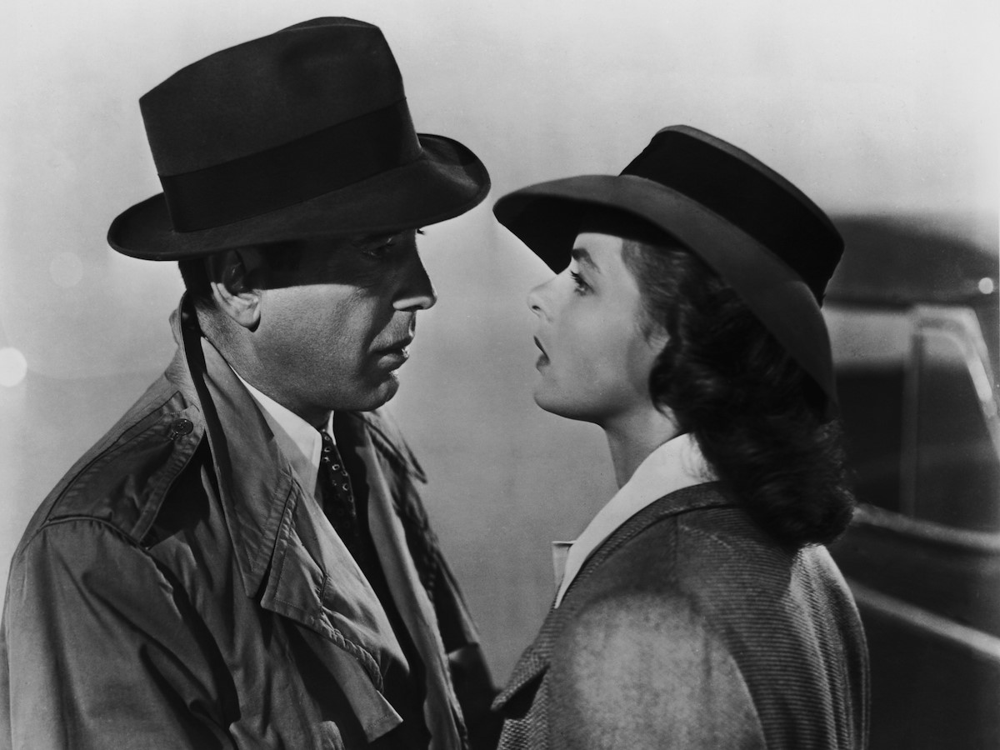

1941 - 1954

Hollywood, a worldwide phenomenon and trend-setter
The Great Depression of the 1930's enabled the arrival of new audiences and filmmakers. World War 2 changed the industry, bringing into the world
new kinds of films. The Golden Era had better production values and more available film technologies which meant the introduction of comedies, slapstick and gangster films, and science fictions.
Notable films from this era of film industry include Orson Welle's "Citizen Kane" (1941), James Algar's "Bambi" (1942), Michael Curtiz's "Casablanca" (1942), and Frank Capra's "It's a Wonderful Life" (1946).
⭐ Stars of The Golden Era ⭐